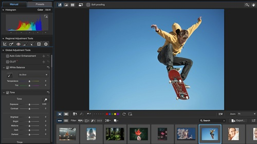

Welcome to Digital Photography Tips
Discover the art and science of digital photography. From basic techniques to advanced compositions, we'll help you capture stunning images that tell your story.
Getting Started
Learn the fundamentals of digital photography, including camera settings, composition rules, and essential equipment for beginners.
Advanced Techniques
Master professional techniques like long exposure, HDR photography, and creative lighting to take your skills to the next level.
Post-Processing
Discover the power of digital darkroom techniques and learn how to enhance your photos using various editing software.
Quick Photography Tips
Rule of Thirds
Place subjects along grid lines for better composition
Golden Hour
Shoot during sunrise or sunset for warm, soft light
Focus Sharp
Use single-point autofocus for precise control
Steady Shots
Use a tripod or proper stance to avoid camera shake